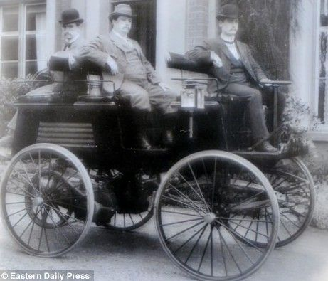

Le changement climatique est un réel challenge pour notre génération et celles à venir.
Face à ces dérèglements qui menacent les Hommes et les écosystèmes, il est urgent de réagir et de savoir s'affranchir des combustibles fossiles.
Une des solutions avancées est le passage aux véhicules électriques.
Vrai ou fausse bonne idée ? Nous vous invitons à y réfléchir.
SEE promotion 2016 — IMT Atlantique
Pourquoi le véhicule électrique ?
Inscrit profondément dans l’ADN de la transition écologique, le transport questionne. Les alternatives à la voiture thermique sont nombreuses à voir le jour, tandis que certaines sont remises à la mode. La voiture électrique, longtemps abandonnée face au développement de sa soeur thermique, est aujourd’hui au cœur de la controverse du futur de l’automobile et de notre mobilité. Si bien qu’on l’évoque autant comme une «révolution», comme l'assuré « futur de l’automobile », comme un « mirage écologique », comme une « arnaque », ou encore comme un véritable « serpent de mer ».
On observe aujourd’hui que le transport représente le seul secteur dont les émissions de gaz à effet de serre ont augmenté en France depuis 1990. Il représente environ 30% des émissions de gaz à effet de serre de l’Hexagone et dépend à 94% des carburants fossiles.
Accélérer la transition dans les transports incarne ainsi un défi crucial et majeur de notre époque. Mais par quel voie ? celle de la sobriété ? celle du report modal? de l’efficacité énergétique ? ou bien de l’électrification à partir des énergies renouvelables ?
Quel véhicule électrique ?
Le terme voiture électrique renvoie à des réalités multiples puisqu’il existe différents types de motorisations intégrant des éléments électriques :
- La voiture hybride rechargeable (ex : Toyota prius)
- L’hybride classique
- Les voitures dotées d’un prolongateur d’autonomie (ex : Opel ampera)
- La voiture électrique à batterie (ex BlueCar, Zoé)
C'est cette dernière qui fera l’objet de ce rapport puisqu’elle est au coeur des solutions pour respecter l’objectif plan climat lancé par le gouvernement français (fin de la vente des véhicules essence et diesel d’ici 2040) et l’objectif “zéro émission CO2”.
Pour éviter tout écueil sur les termes utilisés, nous désignerons par voiture électrique les voiture ne fonctionnant que sur la base d’un moteur électrique et d’une batterie, sans intégration d’autres composants issus de la technologie thermique. Ainsi, en évoquant le marché de la voiture électrique (VE) nous faisons référence au marché des voitures particulières électriques à batterie destinées au grand public, et qui en l’espèce recouvre un nombre limité de modèles.
Aujourd’hui un développement croissant des voitures électriques semble s’imposer car il répondrait à certains défis majeurs du 21e siècle : la lutte contre le réchauffement climatique, la limitation des ressources naturelles, - en l'occurrence le pétrole - mais est-ce réellement le cas ?
A travers une synthèse de recherches effectuées et l’étude de divers opinions sur la question de la voiture électrique, nous proposons un état des lieux sur la controverse de la voiture électrique en abordant celle-ci à travers les différents prismes que sont : la pollution atmosphérique, le cycle de vie des batteries, la question du mix énergétique et de l’économie de la VE, et enfin la question politique et géopolitique.
Histoire du véhicule électrique
1884, une “carriole électrique”
A travers ce paragraphe, nous aimerions proposer “une histoire” de la voiture électrique dont le but est d’expliciter comment cette voiture est devenue un artefact de la contestation de l’automobile thermique.
Commencer cette histoire au XIXème siècle nous permet de rappeler que l’invention de la traction électrique a précédé celle du moteur à combustion interne. En effet, le tout premier véhicule électrique (tricycle) date de 1834 tandis que le moteur à combustion apparut en 1861. Toutefois, son fonctionnement était très limité de par la taille et la puissance des batterie existantes à l’époque. C’est donc avec l’apparition des batteries au plomb-acide et de leur amélioration en 1880 qu’on commença à parler de ces véhicules comme véritablement industrialisables. La “Tylbury électrique” à deux vitesse naquit ainsi en 1881, considérée comme l’une des premières voitures électriques de l’histoire. La production en série de certains véhicules commença dès 1893 alors que le premier véhicule thermique venait de voir le jour (1886).
Comparée à la voiture essence, l’électrique présentait de nombreux avantages liés à son démarrage facile, sa propreté, son architecture motrice facile à entretenir, son bruit réduit, elle présentait aussi moins de vibration et moins d’odeurs. Son autonomie de 30 km était alors amplement suffisante pour son utilisation, le réseaux routier étant principalement urbain à cette époque. À la fin du XIXème siècle, la compétition entre les deux types de motorisations n’existait pas réellement. Le but ultime des promoteurs de l’automobile étant de substituer la traction hippomobile, jugée sale, polluante et encombrante, par n’importe quel moteur.
Le XXème siècle, marqué par de nombreuses innovations dans tous les domaines fit émerger une compétition entre les deux types de moteur qui se solda par l’échec technique de la voiture électrique à répondre aux exigences croissantes sur l’autonomie. Dans cette course d’endurance la voiture électrique perdit son statut de concurrente sérieuse. Faute de solutions pour augmenter l’autonomie des batteries, cette dernière disparut peu à peu du paysage automobile.
C’est lors la seconde guerre mondiale et la pénurie de carburant qu’elle fut reconsidérée. Son haut prix empêchait toutefois d’envisager son développement à grande échelle. Si les différentes initiatives de développement de la VE restèrent très limitées, elles permirent sa légitimation en temps de raréfaction de pétrole. Mais une fois la guerre terminée, elle ne survit pas au retour du pétrole et de la voiture à essence.
Avec l’émergence dans les années 1960 de la pile à combustible, la traction électrique est redevenue une technologie potentiellement industrialisable et en mesure de résoudre le problème historique de l’autonomie. De plus, suite à la volonté politique de limiter les pollutions automobile (Clean Air Act, National Environmental Policy…), elle représentait une solution rapidement disponible. Mais les constructeur ont choisis une stratégie d’amélioration des moteurs, moins coûteuse et moins incertaine que le développement d’accumulateurs pour les VE. En 1970, cette dernière est donc restée un projet long termiste, incorporée dans les programmes électriques sous la forme de missions de veille technologiques.
En 1990, une étape majeure voit le jour avec la mise en place en Californie du ZEV (Zero Emission Vehicule) qui impose aux constructeurs automobile américains qu’au moins 2% de leurs ventes d’ici 1998 représente des véhicules n’émettant aucun gaz à effet de serre. Ces 2% passe à 10% en 2003. En France, la volonté d’un parc automobile composé de 5% de VE donne naissance à de nombreux modèles comme la Citroën AX électrique ou la Zoom de Renault. Ces dernières ont malheureusement fait face à un échec commercial.
Après la crise économique de 2008, la voiture électrique connaît enfin un regain d’intérêt et un succès croissant, en France notamment avec le lancement de la Renault Zoé en 2013.
Plusieurs problématiques
Cycles de vie — batteries
Discussion sur le recyclage des batteries au lithium et analyse du cycle de vie du VE